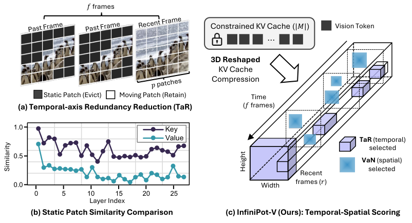

论文信息
| 论文 | InfiniPot-V: Memory-Constrained KV Cache Compression for Streaming Video Understanding |
|---|---|
| 作者 | Minsoo Kim、Kyuhong Shim、Jungwook Choi、Simyung Chang |
| 机构 | Hanyang University、Sungkyunkwan University、Qualcomm AI Research |
| 发表 | NeurIPS 2025 |
| 一句话 | 在视频持续到来、未来问题未知且显存固定的设定下，反复压缩视觉 KV cache，使缓存长度不再随视频时长线性增长。 |
1. 核心摘要
长视频 MLLM 的上下文瓶颈不仅来自视觉 token 数量，也来自 Transformer 各层逐步累积的 key-value（KV）cache。若先把整段视频编码完再压缩，峰值内存仍随视频长度增长；若依赖已知问题筛选 token，则无法服务问题尚未出现的连续视频流。InfiniPot-V 将问题限定为 Streaming Video Understanding：帧持续输入、查询可能晚到、设备只有固定内存预算。
方法以 Continual KV-cache Compression（CKV）为主循环：缓存抵达预算 |M| 时，压缩到较小目标 |C|，为后续帧腾出空间。Temporal-axis Redundancy（TaR）用 Key 的跨帧同位置相似度淘汰时间冗余 token；Value Norm（VaN）则用 Value 的范数选择语义显著 token，并以逐层自适应池化降低空间重复。论文报告在四个开源 MLLM、四个长视频与两个流式 benchmark 上，最高可减少 94% 峰值 GPU 内存，同时保持或超过 Full-KV 结果，并能支持多轮问答。
2. 研究动机
流式视频与离线长视频的约束不同
离线 VideoQA 可以先得到完整视频，也通常先拿到用户问题；因此可以以问题为条件做 token 选择，或先建立完整 KV 再在问答时取回。流式场景没有这个条件：新帧不断到来，未来视频和未来 query 都不可见，而手机、AR 眼镜和边缘机器人又不能允许缓存无限增长。因而真正需要管理的是在线推理过程中的 KV 本身，而不只是输入帧采样率。
只压视觉输入仍会在 prefill 后失控
输入视觉压缩（IVC）在视觉编码或送入语言模型前删 token；普通 KV 压缩（KVC）则往往假定完整 prompt 已经 prefill。两者都可能把峰值内存留在压缩前。CKV 的切入点是：让“接收一段帧—产生新 KV—到阈值就压缩”成为持续循环，使内存上界与流长解耦。
时间冗余和语义显著性缺一不可
只保留近期窗口会遗忘早期事件，只做均匀采样又会浪费在静态背景。作者将选择拆成互补的两个问题：同一 patch 在相邻帧里是否已经出现过（时间冗余），以及某个视觉 token 是否携带更丰富的语义表示（空间显著性）。这和 VLA 的历史记忆问题非常相似：重复的手臂运动不应持续占缓存，但对象状态变化和关键交互证据不能被近期窗口挤掉。
3. 方法论

原论文 Figure 2。左侧比较相邻帧静态与变化 patch 的相似度；右侧展示 TaR 的时间选择与 VaN 的空间选择如何共同形成固定预算缓存。
3.1 CKV 主循环：预算触发，而非事后整理
每个新帧先照常经过视觉编码器和 MLLM，得到新 Knew, Vnew 并追加至缓存。当缓存长度达到内存预算 |M|，系统立即抽取最近 r 帧、对其余历史计算 TaR/VaN 分数，并把整个缓存压缩为目标长度 |C|，其中 |M| >> |C|。释放的 |M|−|C| 槽位接收下一轮新帧；任意时刻有 query 到来，模型直接基于当前压缩缓存回答，无需回放原始视频。
这里的关键是压缩发生在缓存超预算时而非问答前。因而缓存长度始终被控制，代价是必须在 query-agnostic 条件下做选择。论文报告该压缩过程相对于输入帧处理时间仅增加约 0.5% 开销；这使其更像在线系统的内存控制器，而非额外的大型检索模型。
3.2 TaR：用 Key 的时序相似性保留不冗余的历史
作者把 K∈R^(H×(f·p)×D) 按帧和 patch 重排，其中 H 是 attention head 数、f 是当前预算内帧数、p=|M|/f 是每帧视觉 token 数。最近 r 帧完整保留；早期 f−r 帧的每个位置与最近帧相同位置比较。其分数为：
sTaR(t,i,j)=−(1/r) Σt′=1r cos(Kpast(t,i,j), Krecent(t′,i,j))。
负号把“低相似、低冗余”的 token 转成更高分，之后从历史帧中取 Top-K。保留最近帧可以避免刚发生的变化被过早压掉；从早期帧保留低相似 patch 则让很早出现但仍有区别性的视觉证据留在 cache。对事件记忆而言，这一机制相当于低成本的“变化证据”，但它判断的是表示变化，不保证变化对任务一定重要。
3.3 VaN：从 Value 的范数选择语义显著区域
TaR 主要解决跨帧重复，不能保证留下对象、文字或交互区域。VaN 以 Value token 的二范数作为显著性：sVaN=||V(t,i,j)||₂。论文通过将视觉表示投影到词表空间并考察熵，论证高 VaN token 具有更丰富的语义信息；随后在每层选取池化后 VaN 最高的 token。
VaN 的池化核不是各层固定。论文观察到早中层 VaN 具有较强空间局部性，深层则更分散，于是根据每层 VaN 的 coefficient of variation（CV）选择 {1,3,5,7} 的池化尺度：CV 小的层使用较大核以消除成片的重复高分区域，CV 大的深层使用更小核以保留细粒度差异。这样避免显著 token 全挤在同一空间位置。
3.4 两种选择如何合并
TaR 与 VaN 采用顺序预算分配：先用比例 α|C| 给 TaR 分配时间维槽位，再用剩余 (1−α)|C| 给 VaN 分配空间语义槽位，最后加上完整的 recent-frame token。TaR 防止缓存被相同背景占满，VaN 防止仅按运动删掉语义对象；最近帧保证控制或问答对当前状态仍敏感。论文的设计空间实验还考察了 α、最近帧比例和压缩率。
3.5 对 VLA 历史关键事件的含义
InfiniPot-V 可作为“持续运行的底层缓存守门员”：TaR 对应视觉变化/冗余门控，VaN 对应无 query 情况下的语义显著性。但机器人关键事件还依赖接触、夹爪、关节、语言进度和任务成功等不可由视觉 Value norm 充分表达的证据。因此更合理的迁移方式是将 TaR/VaN 的分数与 eventness 融合：普通重复 token 做 TaR/VaN 压缩，确认的 grasp、place、open 等事件则作为不可轻易淘汰的 commit 条目。
4. 实验与结果
设置。论文在四个开源 MLLM 上测试，并覆盖 VideoMME、MLVU、LongVideoBench、OVO-Bench 和 StreamingBench 等长视频/流式评测；比较对象包括 FullKV、输入视觉压缩的 TTC/STC、均匀选择以及其他 KVC 方法。核心条件是给定 3K、4K 或 6K 等固定内存预算，而非让缓存随上下文增长。
| 原文表格条件 | 对照 | InfiniPot-V | 解读 |
|---|---|---|---|
| Qwen-2-VL-7B，3K budget，VideoMME/MLVU 平均 | TTC 54.8；STC 55.0 | 63.1 | 在同样紧的固定预算下，持续 KV 压缩优于两类输入视觉压缩。 |
| Qwen-2-VL-7B，6K budget，VideoMME/MLVU 平均 | FullKV（50K）64.2 | 64.3 | 6K 压缩缓存达到甚至略高于 50K FullKV 的该表平均分。 |
| Qwen-2.5-VL-7B，4K budget，OVO-Avg / StreamingBench | Uniform Select：51.7 / 75.2 | 53.6 / 76.4 | 流式 benchmark 也受益，不只针对离线长视频。 |
论文摘要报告峰值 GPU 内存最高降低 94%，并指出在多轮对话中仍能保持或超过 Full-KV 精度。消融的逻辑在于：TaR-only 会偏重时间去重，VaN-only 会偏重空间语义；两者按预算结合才同时覆盖历史差异和显著区域。这里的性能仍是 VideoQA/视频理解分数，不能直接等同于机器人控制的成功率或关键事件召回。
5. 优势与局限
| 优势 | 局限 / 迁移注意点 |
|---|---|
|
|
6. 总结
InfiniPot-V 将长视频 KV 管理从“事后删掉部分上下文”改成持续的固定预算控制：近期帧完整保留，早期 cache 则由 TaR 留下不冗余变化、由 VaN 留下语义显著区域。这使无 query 的无限视频流也能维持有限内存。
对 VLA 历史记忆，最有价值的是其缓存更新时机和预算循环，而不是直接把 Value norm 视为关键事件分数。可以将其作为稠密视觉 token 的基础压缩层，并在其上以 motion、appearance、contact 和任务阶段确认真正不可丢弃的事件级 KV 条目。